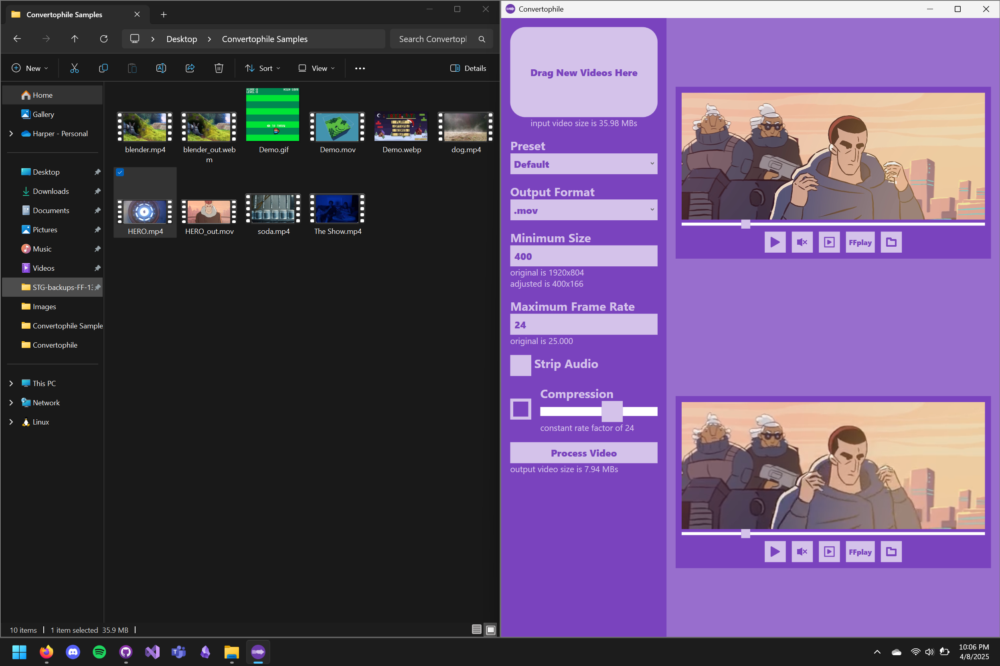
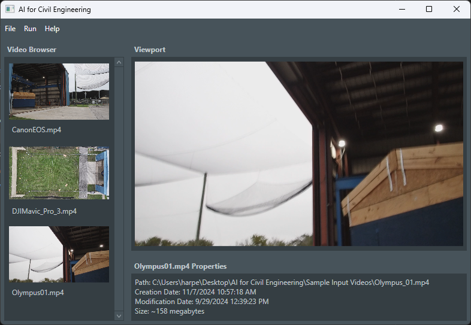
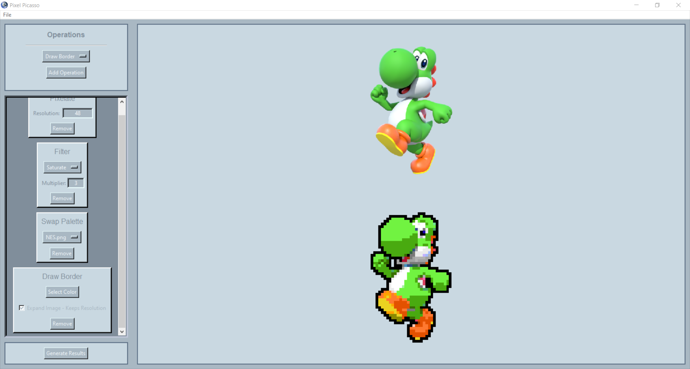
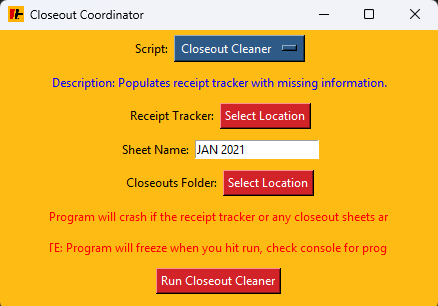

Convertophile
Itch.io
A minimalist video conversion, compression, and modification software.

AI for Civil Engineering
A senior design project which uses computer vision techniques to track wind-swept debris for analysis by civil engineers.

Pixel Picasso
Itch.io
An abandoned pixelation tool for creating game art.

Closeout Coordinator
An auditing tool created during a contract with CertaPro Painters of Atlanta.
